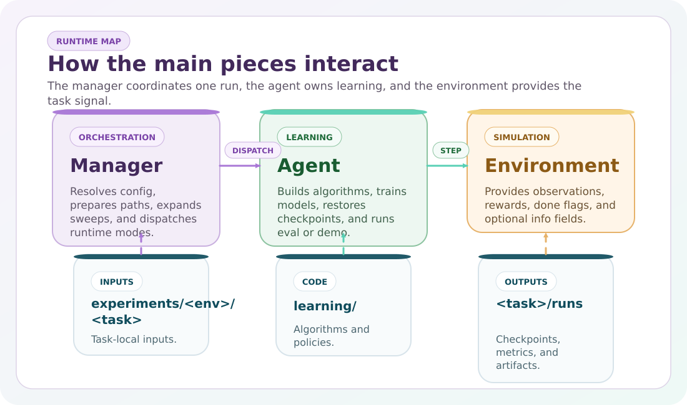

Manager¶
AgentManager is the runtime orchestrator of CTRL-P.

It is responsible for turning an env-root control file into:
resolved paths
merged parameters
concrete environment instances
concrete agent runs
saved outputs
Quick View¶
You need to know… |
Manager responsibility |
|---|---|
where configs come from |
resolution and merge order |
what mode will run |
runtime dispatch |
where outputs will be written |
path construction |
how many concrete runs will exist |
sweep expansion |
when folders are created |
lazy side effects at mode time |
What It Owns¶
Resolution¶
parse
<control>.ymlresolve environment and algorithm selectors
merge defaults and overrides
resolve output paths
Execution¶
build train/val/test environments
instantiate the agent and algorithm
dispatch runtime modes
create output folders lazily when a mode needs them
Logging and outputs¶
record where parameters came from
write resolved snapshots
aggregate evaluation outputs
manage rollout and pretraining paths
When the manager is replaying an existing run, eval, demo, and rollout prefer the saved parameters.yml snapshot. When it is creating or validating a run, resolve, check, train, pretrain, and hpo use the editable source files instead. HPO also reads the task-local search space from parameters/hpo/<algo>.yml.
Mode API¶
Method |
Purpose |
|---|---|
|
Print merged config, paths, and load sources |
|
Build one env and one model and validate the setup |
|
Train across sweep runs |
|
Evaluate models and aggregate outputs |
|
Run demos |
|
Generate rollout datasets |
|
Convert rollout data for imitation workflows |
|
Run Optuna-based optimization |
Note
The user-facing concept is mode, but internal compatibility code still uses names such as ctrlp.manager.task_policy and manager.config["tasks"].
Resolution Order¶
Step |
What happens |
|---|---|
1 |
read the env-root control file |
2 |
resolve |
3 |
merge package defaults and experiment overrides |
4 |
expand |
5 |
create folders only if the chosen mode needs them |
Important
resolve() is intentionally side-effect free.
It should not create run folders or data folders.
Env Resolution¶
The manager resolves environments in this order:
built-in CTRL-P environments
external CTRL-P env plugins
Gymnasium fallback
If the selected environment is a generic Gymnasium id:
resolve()stays read-onlyexecutable modes bootstrap missing config files lazily
Paths¶
task root:
experiments/<env>/control root:
experiments/<env>/run root:
experiments/<env>/runs/<task>/<algo>/<variant>/per-agent folder:
.../agents/<agent>/ProcGen data root:
data/procgen/<env>/<task>/offline dataset root:
data/datasets/<env>/<task>/
Note
The manager owns path resolution. Agent should not invent output paths and environments should never write directly into run folders on their own.
ProcGen¶
For built-in CTRL-P environments, the manager can resolve ProcGen input from:
YAML config for parametric generation
dataset files for dataset-driven scenarios
It also supports:
mode-specific train/val/test ProcGen settings
rollout.mode: procgenfor scenario materialization
Warning
Generic Gymnasium environments do not support the built-in ProcGen flow. They can still use standard rollout datasets.
Sweeps¶
The sweep block defines one or more sweep dimensions.
The manager expands the cartesian product and creates one concrete run per combination.
Typical example:
runtime:
sweep:
seed: [0, 1, 2]
Mental Model¶
If you are reading the code for the first time, treat the manager as the bridge between:
static config files
runtime env/model construction
generated output folders
It should contain orchestration logic, not environment logic and not algorithm internals.